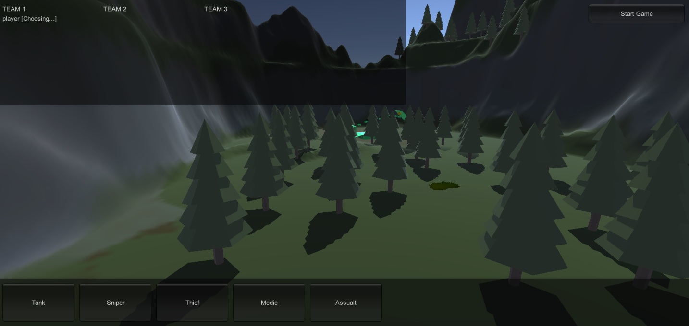
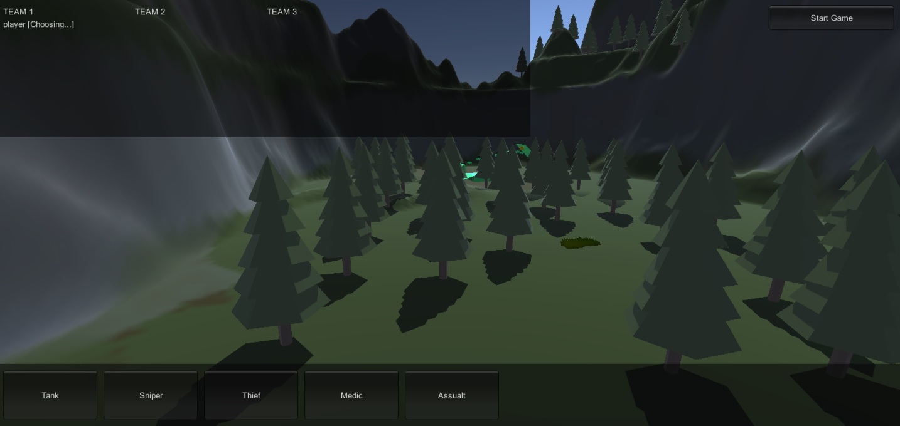

RouteThis Leaderboards
I was asked to increase usage of the software by adding some sort of gamificaiton, I decided to do a leaderboard that tracked the usage of each agent and ranked them compared to all the other agents in that call center.

- Created a leaderboard config page on the admin dashboard that generated a JSON file that was stored in the mongo database and used to generate custom pages for each client
- Made weekly goals and personal goal cards completely configurable from a admin dashboard where you could control what is display for each specific agent
- Tracked usage of all agents and stored statistics in a user variable in the mongo database
- Added ability to add agents to groups to promote team building at the call centers
- Page programed using react with automated testing using jest
- Ability to disable dashboard feature for certain clients or users
- Custom avitar images were selected by hasing their emails so each user consistently got the same avitar
RouteThis Update Popup
This is a configurable popup I created for the customer success team to help inform the users about new features or events. I made the popup completely congifurable from an admin dashboard:

- The customer success team had the ability to completely cusomize everything int he popup, the admin page had input areas for html which would be used for inside the content box of the modal.
- To stop the Popup from showing up everytime they logged in, I stored the popup version number as a user variable in the mongo database, and whenever the version number was changed in teh admin page the popup would show again for that user
- Fireworks that you can toggle on and off for extra style points!
Frontier
This is a first person battle royal shooter game made in unity with multiplayer capability and multiple classes and guns to choose from, programmed using C# and the unity engine:
 

- 3 teams all start on seperate corners of the map and try to lead a payload tot he center, they can speed up the payload by collecting gold from the other teams
- free assests were used from teh unity store, I did a lot of the map design and building the scene, along with some work on the player movement and guns
Tic Tac Toe Machine
Not having a friend to play ‘tic-tac-toe’ with was a major problem in my life. having a busy schedule made befriending people who play competitive tic-tac-toe very difficult. so I invented a system that will always be there, ready to be challenged to a game of tic-tac-toe.
- Made in Robot C, and built out of lego this machine is build to last, Tic Tac toe algorithm used matrix algebra to solve for the best moves"
- NEVER lost a game of tic tac toe, after 100 attempts. (fun fact, tic tac toe is a solvable game)"
Intred iOS and Android App
A project I did at Routethis for the onboarding of a new client this is a whitelabel app that scans the user wifi network for devices, very similar to their original Routethis Helps App
Link to App in Google Play Store: https://play.google.com/store/apps/details?id=com.routethis.intred.
Link to App in Apple Store: https://apps.apple.com/ca/app/my-intred-eir/id1473815972.
SMS Feature Usage Tracking
A project I did at Routethis for the onboarding of a new client this is a whitelabel app that scans the user wifi network for devices, very similar to their original Routethis Helps App
- Tracked support agent SMS feature usage and displayed it on a webpage that only support agent admins can view. This gave our clients the ability to track their usage per billing cycle
- Stored usage stats in Mongo database, accumulated enough data and gave users the ability to select exact time frames for usage.
Periodic Password Reset and Storing Old Passwords
A project I did at routethis to implement a configurable password reset period and saftely store old hashed passwords to stop support agetnsf rom reusing passwords after the reset
- Hashing and salting new passwords using bcrypt npm in the backend and storing them in a secure database
- Decrypting old passwords to compare with new input using brcrypt library, so that password is never actaully unhashed
- Stored passwords from multiple different flows: inital account setup, forgot password reset, and password reset requests
Wildcard Certificate Generation Using LetsEncrypt
A project I did at Aterica Digital Health where I had to generate a wildcard certificate for their website using letsEncyrpt with an cron job that auto renewed the certificate
- Hashing and salting new passwords using bcrypt npm in the backend and storing them in a secure database
- Decrypting old passwords to compare with new input using brcrypt library, so that password is never actaully unhashed
- Stored passwords from multiple different flows: inital account setup, forgot password reset, and password reset requests
Setup Basis For Standardized Testing Using TestRail
A project I did at routethis to implement a configurable password reset period and saftely store old hashed passwords to stop support agetnsf rom reusing passwords after the reset
- Hashing and salting new passwords using bcrypt npm in the backend and storing them in a secure database
- Decrypting old passwords to compare with new input using brcrypt library, so that password is never actaully unhashed
- Stored passwords from multiple different flows: inital account setup, forgot password reset, and password reset requests